多 Agent 协作模式图解
10 种常见的多 Agent 协作模式。每种一张可交互的协作流程图（悬停追踪、点击聚焦、◀ ▶ 单步）；其中 4 种需要额外基础设施的，另附系统架构图。每张图下方列出优劣和市面上遵循该模式的工具；各模式之间的横向比较见 纵向对比。
-
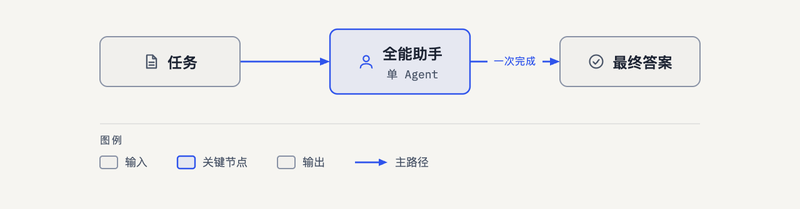
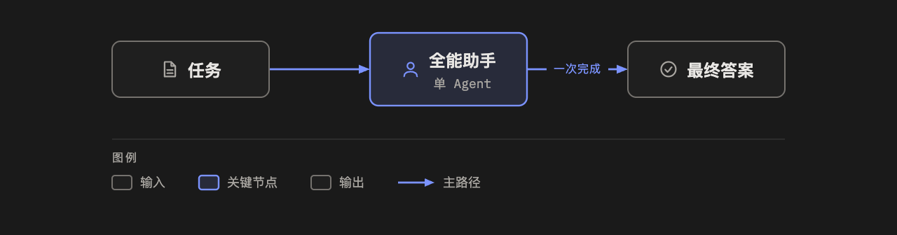
MA-00单 Agent 基线
一个 Agent 一次完成
调用 1串行 1 轮并行 无＋ 任务一次调用就能完成时，成本和延迟都最低
－ 只有一个视角，没有任何自检
Claude Code / Codex · Cursor / Copilot · ChatGPT / Claude
-
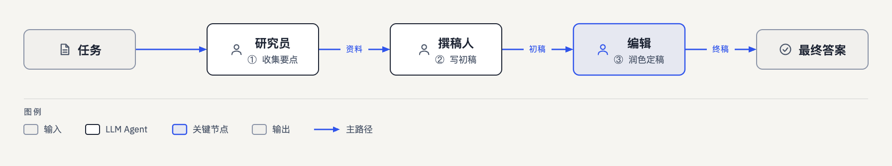
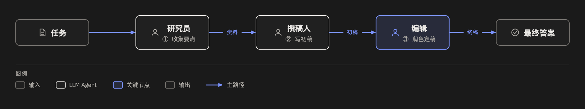
MA-01顺序流水线
研究员 → 撰稿人 → 编辑
调用 K串行 K 轮并行 无＋ 角色分工清晰，每一棒只做一件事
－ 传话失真：每一棒只看到上一棒的产出
MetaGPT · ChatDev · CrewAI · MS Agent Framework · Archon · Dify / Coze / n8n
-
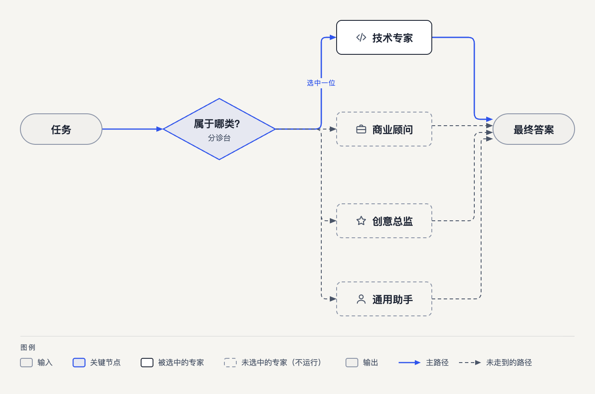
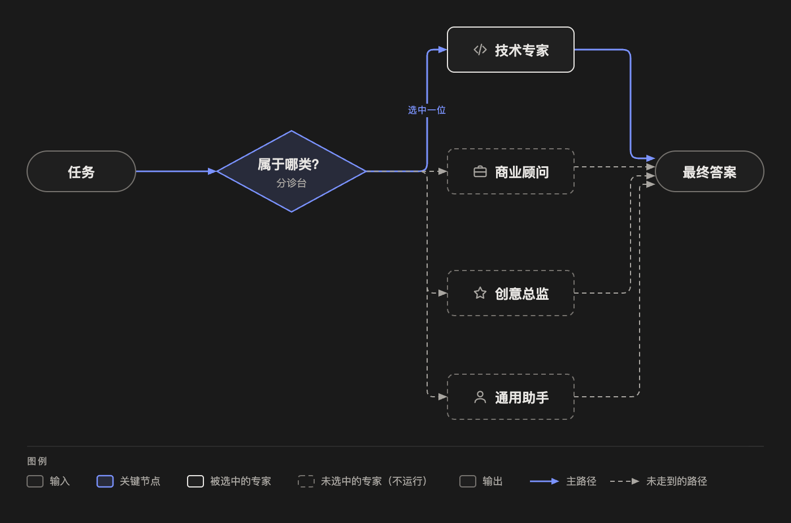
MA-02路由分诊
分类器 → 1 位专家
调用 2串行 2 轮并行 无（只运行 1 位专家）＋ 只多一次分类调用，成本几乎和单 Agent 一样
－ 分错类就全错，而且没有纠正机制
OpenAI Agents SDK · Claude Code · Multica · Dify / Coze
-
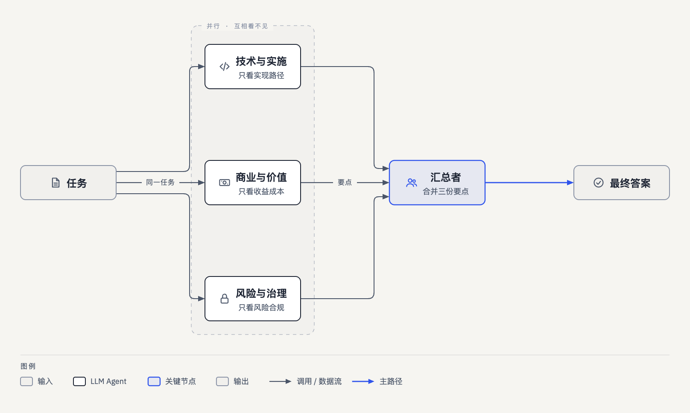
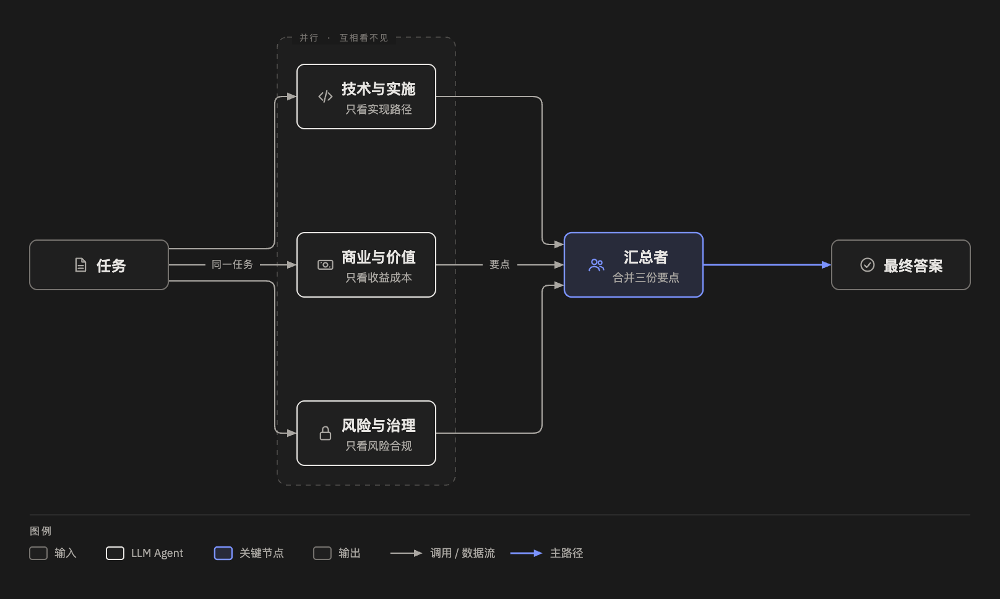
MA-03并行分工
3 个固定视角并行 → 汇总
调用 K + 1串行 2 轮并行 K 路，视角事先固定＋ 几路同时进行，耗时 ≈ 最慢的一路 + 汇总一轮
－ 视角是事先定死的，遇到新问题无法调整
Google ADK · MS Agent Framework · LangGraph · Dify
-
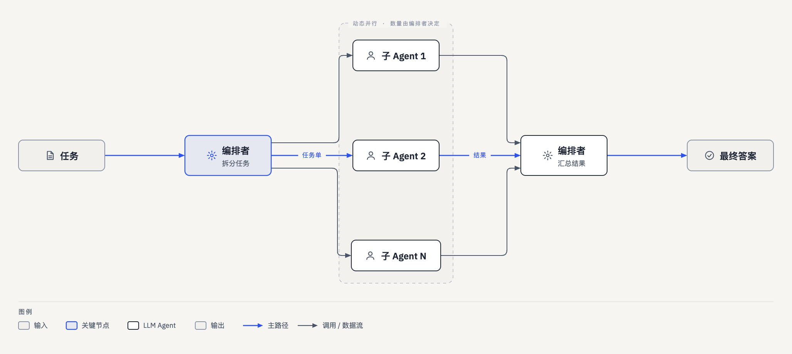
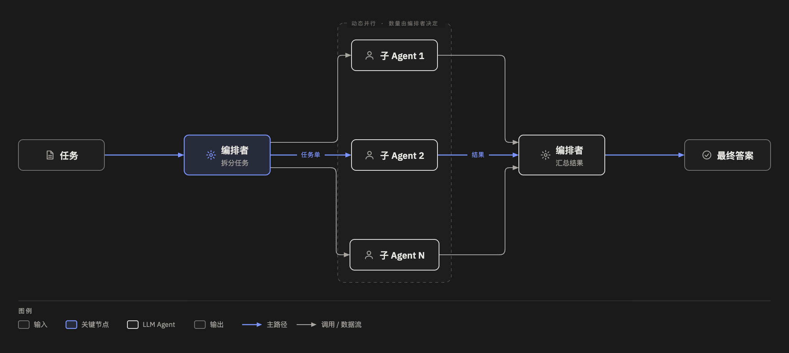
MA-04含架构图委派式编排
编排者动态拆分 → N 个子 Agent → 汇总
调用 N + 2串行 3 轮并行 N 路，运行时决定＋ 按任务动态拆分，适应性强
－ 拆分不清就会重复劳动或遗漏
Claude Code · Codex · Kimi Code · Hermes Agent · LangGraph · AWS CAO / Paseo
-
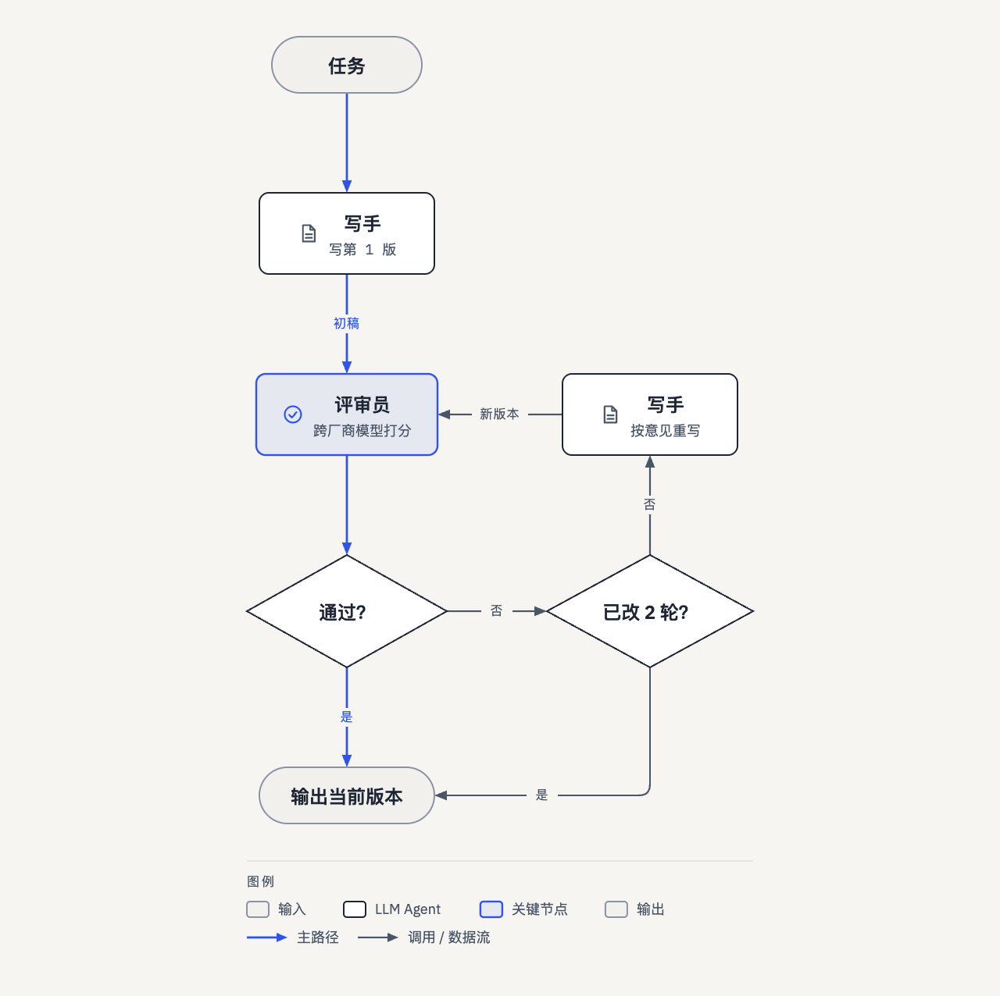
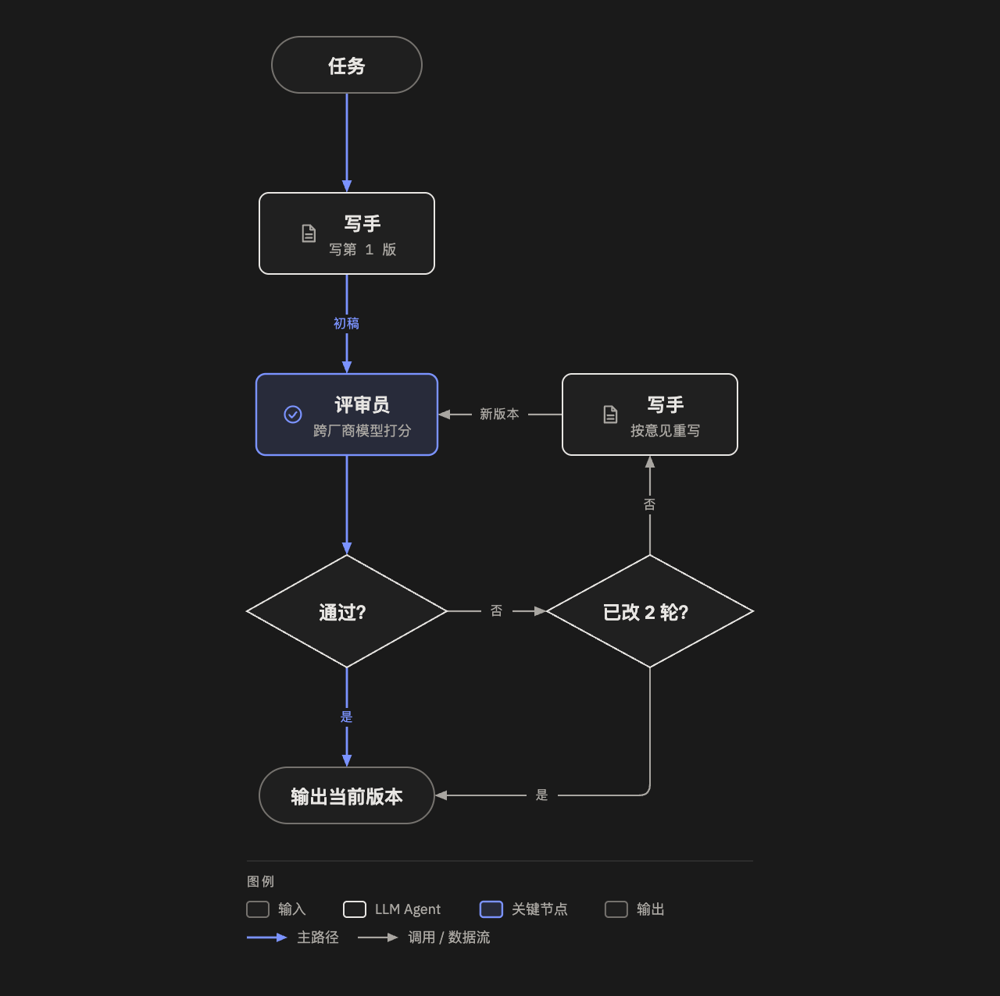
MA-05含架构图生成-评审循环
写 → 评 → 改（最多 2 轮）
调用 2 ~ 2R + 1串行 2 ~ 2R + 1 轮并行 无＋ 质量逐轮提升，有明确的验收标准
－ 标准偏松等于没审，偏严会一直打回、烧钱
Claude Code + Codex · Claude Code · Orchestrator.inc · Google ADK · OpenAI Agents SDK
-
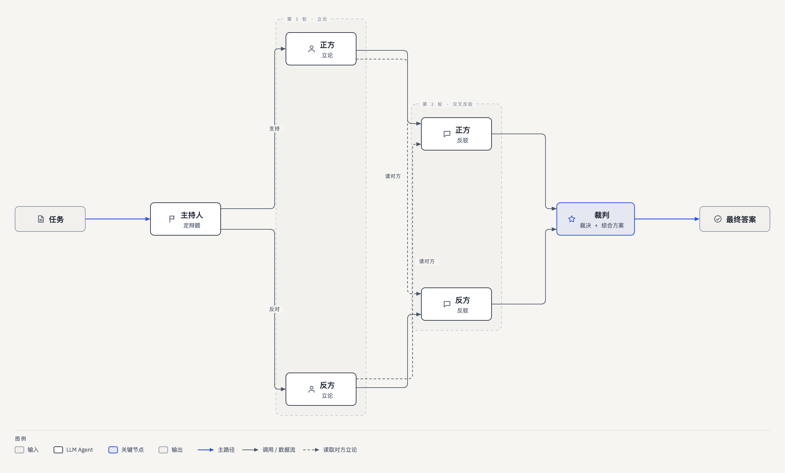
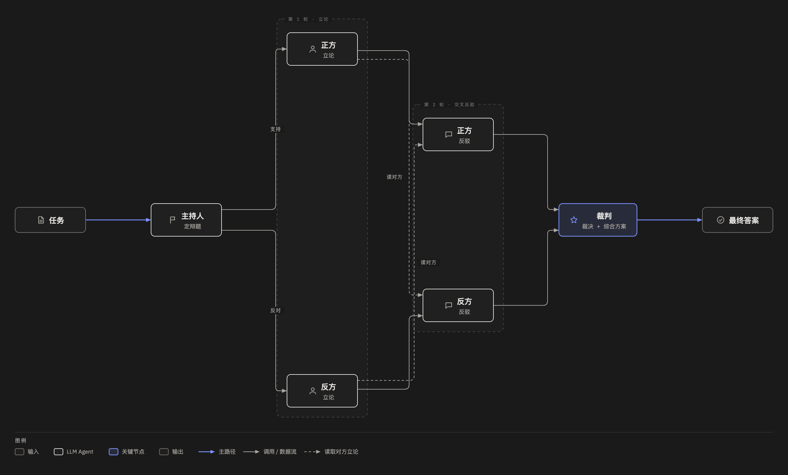
MA-06多 Agent 辩论
主持人 → 正反立论 → 交叉反驳 → 裁判
调用 2R + 2串行 R + 2 轮并行 2 路（正方、反方）＋ 正反对抗，能逼出反例和隐含假设
－ 多数基准上并不比单模型 CoT 或多次采样投票更好
MAD（Liang et al.） · Multi-Agent Debate（Du et al.） · MS Agent Framework · Maestro
-
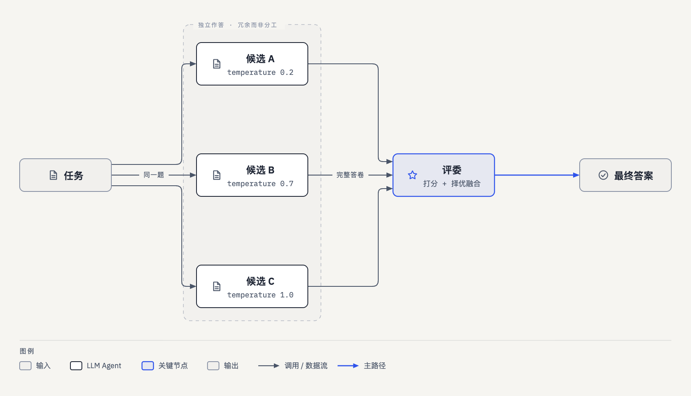
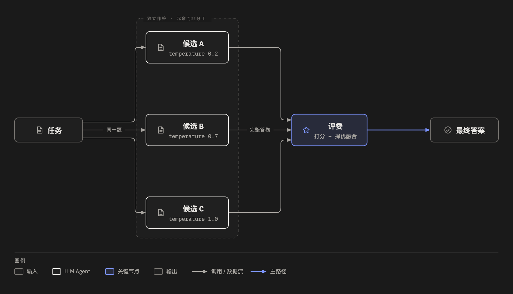
MA-07投票集成
3 份独立答卷 → 评委择优融合
调用 N + 1串行 2 轮并行 N 路，同一任务＋ 多份独立答卷，可以抵消单次失误
－ 成本约是单次的 N 倍
Cursor · Codex Cloud · GitHub Agent HQ · llm-council · Self-Consistency
-
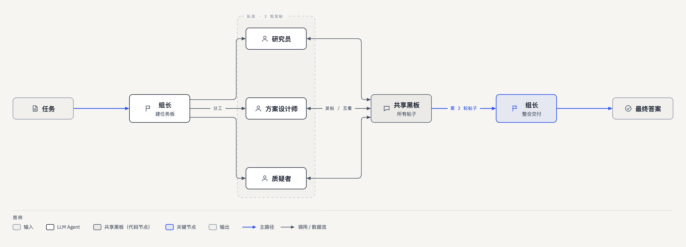
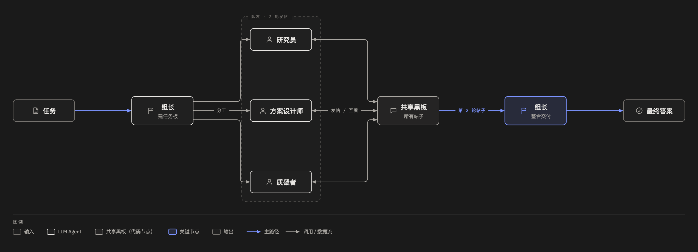
MA-08含架构图团队协作 · 共享黑板
组长 → 3 人发帖 → 互看回应 → 整合
调用 K × R + 2串行 R + 2 轮并行 K 路＋ 成员之间能互相看见、互相纠错
－ 每轮每人都要读全部帖子，token 随人数和轮数快速增长
Claude Code · Codex · Hermes Agent · DeepSeek Harness · hcom · Paperclip
-
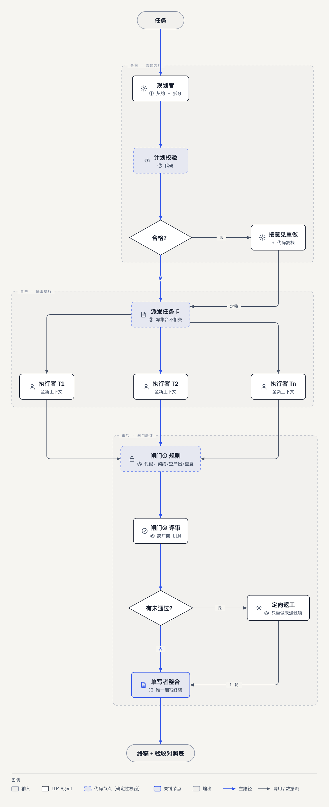
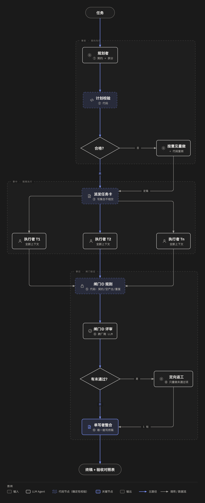
MA-09含架构图契约编排 + 闸门验证
规划 → 计划校验 → 任务卡 → 隔离并行 → 规则闸门 → 交叉评审 → 定向返工 → 单写者整合
调用 N + 3 ~ 2N + 4串行 4 ~ 6 轮并行 N 路，任务卡隔离＋ 事前用契约防止重复劳动：写集合不相交，计划用代码校验
－ 流程最重，调用次数最多
agentguild · Kimi Code · Orchestrator.inc · Gas Town · Bernstein